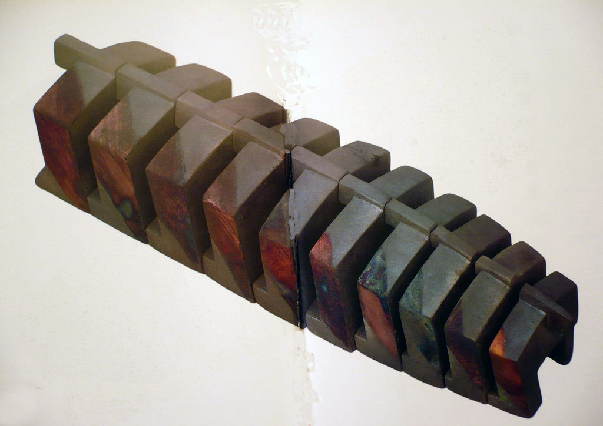

- Мудрец помещает свой разум в обитель души
- и возвращается к началу вещей.
- Лу Ань
- и возвращается к началу вещей.
Из какого материала можно создать скульптуру?
Назовите любой материал, и вы не ошибетесь. Скульптуру можно изваять из дерева, бронзы, чугуна, проволоки, воды, хлеба, снега, пластмассы, из живых людей и соломы.
Первые скульпторы эпохи палеолита лепили барельефы быков и медведей на стенах пещер, а также вытачивали из камней талисманы — статуэтки женщин или тотемных животных.
Шестьдесят тысяч лет спустя наши современники ищут материал для скульптуры, способный передать нашу тоску по основательности, постоянству, прочности, нашу тайную мечту о бессмертии, об истине первичных идей и форм.
Такой материал найден. Это камнеподобный сплав корунда и огнеупорной глины — шамот. По природе своей это камень, превосходящий натуральные камни тяжестью, прочностью и устойчивостью к механическим и температурным воздействиям.
Тамара Соколова избрала этот рукотворный камень для своих произведений конца ХХ и начала ХХI века. Он дал возможность художнику — мыслителю, как никакой другой материал, воплотить фундаментальные проблемы нашего бытия.
Ведь камень — один из архетипов человеческой культуры. Он вызывает в памяти древние пластические образы, возбуждает смутные ощущения где-то в самой глубине естества, на генном уровне. Если начать с самой сути, то камень — это и Человек, и Бог. Девкалион и Пирра создали человечество, идя по земле и бросая через плечо камни, которые превращались в людей (миф древней Греции). Памятник человеку, или знак божества — высокий камень, надгробная стела, обелиск, колонна, минарет, ступ, колокольня...
Иисус Христос, основатель Новой эры в истории человечества — краеугольный камень мировой христианской церкви. Апостол Христа Петр носил имя камня: он был строителем церкви. Дело, построенное на камне, стоиит века; пирамиды египтян стоят тысячелетия.
Камень — знак вечности, носитель памяти, талисман, идол, драгоценность, хранитель света, целитель, божество. Омфала — камень, которым отмечен центр мироздания (миф древней Греции).
Скульптуры, созданные Тамарой Соколовой, тяжелы, как сама Земля, как сумка Миколы Селяниновича, которую богатырь Илья Муромец не смог поднять и на вершок от дороги. Тяжесть вещи — залог её долговечности, и тем самым — ценности.
При первом взгляде на работы Тамары Соколовой поражает простота их форм. Они приближаются к изначальным архетипическим и символическим формам — тем, которые возникли как материализованные числа 0, 1, 2, 3, 4, 5, ∞? Эти эйдетические формы-образы суть круг, треугольник, квадрат, пятиугольник и производные от них пространственные фигуры: тетраэдр, куб, октаэдр, икосаэдр, додекаэдр. Они символизируют соответственно: огонь, землю, воздух, воду и вселенную.
Почему современное искусство (например, геометрический абстракционизм, супрематизм, пуризм, концептуализм и др.) возвращается к простой геометрической форме, предпочитая её формам природы? На этот сложный вопрос не может быть простого ответа. Однако, история и философия подсказывают достаточно ясно: в природе вещей Вечное Возвращение. Всё возвращается «на круги своя». «Что было, то и будет, и нет нового под солнцем». Художник — самый чувствительный «сейсмограф» природных сил, умеет сквозь шум житейской суеты услышать голос пророка: «Остановитесь на путях ваших и рассмотрите, и расспросите о путях древних, где путь добрый, и идите по нему, и найдете покой душам вашим» (Иер.6:16).
Вернуться к Простоте, к чистой форме и элементарным пространственным архетипам, которые были понятны древним народам, но утеряны как идеал в Новое время. Потому и появляются в ХХ веке такие имена, как Малевич, Мондриан, Альберс, Ньюмен, Ротко, Генри Мур, Константин Брынкуш.
Появляется искусство, которое умеет выразить глобальные и космические идеи языком простых линий и плоскостей, элементарной композиции и лаконичной окраски в один-два цвета. Таково искусство Тамары Соколовой.
Начиная работу с керамическими формами, она много экспериментировала с цветом. В конце ХХ века формы её скульптуры стали брутальными и аскетичными, наполненными философским содержанием. Теперь цвет выполняет функцию выявления формы и её конструкции. Но даже однообразная окраска формы — это не отсутствие цвета как художественного средства; в этих случаях цвет выявляет и подчеркивает идею вещи, её содержание. К тому же во многих работах живописные цветные пятна придают скульптуре обаяние и выразительность.
Неторопливо рассмотрим работы Художницы 90-х годов ХХ века. Их можно подразделить на тематические группы (серии): Змеи, Окна, Башни, Колодцы, Люди, Животные, Техника. Наиболее интересны в отношении использования цвета первые четыре группы.
ЗМЕИ
- То дракон, то змея. Наполняется, сокращается, свертывается, распрямляется.
- Лу Ань
Змей — герой восточного эпоса и библейских сказаний, Народных поверий и песен.
Его голова венчает короны египетских владык, Его медное изображение исцеляет народ Израиля от укусов.
Он совратитель первых людей — Евы и Адама.
За это проклят он перед всеми скотами и перед всеми зверями полевыми.
Он криводушный обманщик, но также образец мудрости: «Будьте мудры, как змеи, и кротки, как голуби».
Он опасный соблазнитель, но также и целитель: его яд входит в состав лекарственных средств.
Он убийца кротких зайцев и грустноглазых косуль, но друг мудреца Заратустры.
Он воплощение зла, одно из обличий дьявола, Стало быть, антипод Создателя.
Внешний вид его прекрасен: это красота Диавола, ввергающего в соблазн Человека.
Змей покрыт цветистой чешуей с изящным ритмичным рисунком,который послужил прототипом узоров первых восточных ковров.
Но длинное извилистое тело его внушает отвращение и страх человеку — страх, основанный не только на знании ядовитости змея, но и подсознательный, распространяющийся на безобидных червеобразных животных: ужей, гусениц, сороконожек, червей...
Поскольку человек — это вертикаль, а змей ползает во прахе, строение его чуждо строению человека.
Змей зовется иначе Аспид, что значит «черный».
Три звена этого идола, изваянного Тамарой Соколовой, Черны, как само Зло.
Но другие два звена и хвост покрыты прозрачной светлой кожей, сквозь которую просвечивает розовый цвет крови и жизни — крови невинных жертв, поддерживающих жизнь в теле Аспида.
О жизнеспособности Змея говорит и число звеньев этой могучей фигуры — число пять. Да, он неистребим — если не в этой, то во многих других ипостасях: в человеческой злобе, жестокости, развращенности и бесстыдстве. Глядя на эту могучую форму из шамота, вспомните, сколько зол подстерегают человека, утратившего бдительность.
ЯВЛЕНИЕ — 1
В этой скульптуре просматривается концепция всей серии работ 1994 — 1998 годов: почти первобытная лапидарность форм, напоминающая скульптуру Кикладских островов или Константина Брынкуша.
Это многосуставчатое существо — костяк будущих организмов: он пригодится и ящеру, и рыбе, и змею, и даже человеку (в постнатальном состоянии, то есть уже без хвоста).
В его структуре воплощен космический принцип ритма (он же биологический). Ясно выражены начало и конец. Своими звеньями убывающих размеров от головы до хвоста это незаконченное существо демонстрирует закон движения всего сущего — от большого к малому и обратно, закон возрастания и убывания (сформулированный Гераклитом). Этот же закон выражается синусоидой, отрезок которой просматривается в конфигурации «Явления — 1».
Человеческая мысль во все времена пыталась разгадать тайну начала всех вещей, начала Бытия и Человека. Но поскольку тайна эта в принципе нераскрываема, люди сочиняли мифы о сотворении Земли, Неба и Поднебесной (космогонические мифы). Человеческая мысль постоянно возвращалась к загадке мироздания и жизни на земле.
Всё первичное представлялось мыслителям и художникам как простое, лишенное деталей и пребывающее в единстве. Основополагающие категории бытия так же просты, неразложимы и неопределимы логически: Пространство, Время, Бытие, Мир, Жизнь, Бог...
Явление — 1 сочетает в себе простоту и сложность, статичность и динамизм, органическое и неорганическое начала.
То, что скрепляет все элементы скульптуры:
- однотипность — их конструкции (горизонталь и две опоры)
- монохромная окраска с постепенным переходом от светлого к темному
- число элементов 7 — магическое пифагорейское число, простое и неразложимое, равное числу планет Солнечной системы, числу дней недели, основных цветов солнечного спектра и количеству пар чистых и нечистых тварей, спасенных от гибели в Ноевом ковчеге.
Впрочем, употребление числа 7 в культуре разных народов не поддается исчислению.
БЕЛЫЙ ЗИГЗАГ. ЧЕРНЫЙ ЗИГЗАГ. УМНОЖЕНИЕ.
В этих работах варьируется тема «змеи».
Белый зигзаг — это молния, прорезывающая темное ночное небо, ослепительный свет среди тьмы — «и свет во тьме светит, и тьма не объяла его», апокалиптический свет конца этого мира и начала нового. Это прозрение, приходящее в ночи пророкам, Откровение св.Иоанна Богослова, внушение Духа Святого.
Эта белоснежная структура не имеет в принципе ни начала, ни конца, её можно продолжать, как натуральный числовой ряд, в сторону возрастания и убывания до бесконечности. Но в силу своей материальности число звеньев зигзага ограничено седмицей — самым загадочным и священным числом.
Здесь цвет не расчленяет форму, но напротив, сплавляет воедино все её звенья и символизирует Единство в самом высоком значении этого понятия.
Черный зигзаг — скорее символ (образ) водоплавающей птицы, и в то же время — визуализация универсального закона бытия — закона синусоиды, колебаний и волн. Эта скульптура похожа также на букву какого-нибудь древнего языка, она как будто извлечена из археологических раскопок, рождена темными недрами земли, и потому ей более всего присущ черный цвет. Человек с сильным воображением может увидеть в «Черном зигзаге» образ доброго земляного червя или бескрылого дракона.
УМНОЖЕНИЕ
Эта композиция сохранила лишь едва заметные признаки живого существа. Змей превратился в демонстрацию чистого закона ритма и воплощение совершенного числа 10 — божественной декады, заключающей в себе всю природу чисел.
Фигура состоит из десяти V-образных брусков, поставленных углом вниз или вверх — через один.
Существенно важно то, что колорит её уже не от Земли и не от Света, но от металла; бруски как будто сделаны из железа, раскаленного и заржавленного. Энергия, скрытая в их форме и композиции, визуализируется в цвете багровых окончаний брусков, выставленных подобно противотанковым надолбам для защиты от недоброго вторжения.
Если бы не колорит, внушающий подсознательный ужас и чувство опасности, — можно было бы понять скульптуру как ряд косых крестов — знаков умножения. Возникает вопрос: о каком умножении идет речь? Поскольку вся фигура имеет небольшую голову, присущую живым существам из рода змей, вопрос решается однозначно: она воплощает (и осуждает) мировое Зло.
ГУСЕНИЦА

Эта скульптура завершает ряд змееподобных композиций.
Страшно тяжела она, неподвижна и несгибаема — Не оторвать её от земли.
Это совсем не та гусеница, из которой родится бабочка.
Она рождает не жизнь, а смерть. Это гусеница смертоносных военных машин — танков, давящих всё живое на своём страшном пути.
Она сделана из чугуна.
Её цвет — покрытый прахом металл.
С пятнами крови раздавленных жертв.
Никогда не родит она легких мотыльков.
Она будет погребена в земле, расплавлена в мартеновских печах.
Покрыта проклятиями и забыта.
И след её зарастет травой забвения.
Такова сила образа, созданного Художником.
МОСТ
Эта работа также относится к серии «Змеи», хотя мосты — технические сооружения, а не животные. Мосты, подобно членистоногим, представляют собой горизонтальный корпус на вертикальных опорах. Впрочем, этот мост трудно отождествить с животным: слишком трагичен его образ, слишком непоправимо разрушение. Этот мост сломан — то ли под действием удара и взрыва, то ли от невыносимо тяжелых грузов, перевозимых по нему.
Конечно, он черный без малейшего просвета.
Цвет его — архетипический цвет скорби, разрушения, смерти.
Мост — это прежде всего путь, соединяющий берега реки.
Сломанный мост подсказывает мысли о прерванном пути, разбитой жизни, сломанной судьбе.
Видно, крут был подъем по этому пути — и вот он увенчался крахом.
БАШНИ
- Совершенный человек поселяет свой разум
- в высокой башне, чтобы бродить в высшей чистоте.
- Лу Ань
- в высокой башне, чтобы бродить в высшей чистоте.
В этой серии работ варьируется тема «ряд подобных элементов».
Но, в отличие от «змей», ряд развивается не в длину, а в высоту. Звенья структуры, помещаясь одно над другим, образуют башни. Размеры звеньев закономерно убывают от нижнего к верхнему. Количество их определяется числами 4, 3, 6. Черно-белая окраска четко отделяет соседние звенья друг от друга. Таковы композиционные приёмы в работах этой серии. И хотя они повторяются, смысл вещи в каждом случае индивидуальный.
ВЗАИМОДЕЙСТВИЕ
Это овеществление диалектики единства противоположностей. Черные и белые явления пребывают во взаимно перпендикулярных плоскостях. В то же время они связаны неразрывно: белые без черных существовать не могут. Это закон универсальный и вечный, не знающий исключений. Его устойчивость во времени подтверждается и визуализируется устойчивостью в пространстве. Башни крепко стоят на земле, расширяясь книзу и суживаясь кверху.
Фигурам приданы гармоничные пропорции за счет строгих числовых отношений, но в их конструкции заложена возможность роста как вверх, так и вниз, подобно конструкциям «Змей».
ГЕКСАГРАММА
В этой скульптуре Тамара Соколова воспроизводит в пластике одну из гексаграмм китайской Книги Перемен И-цзин (№63). Она гласит: «Уже конец. Свершение. Малому благоприятна стойкость. В начале — счастье. В конце беспорядок». Каждой черте гексаграммы соответствует окраска в белый или черный цвет. Соответственно в звеньях скульптуры чередуются белый-черный снизу доверху.
Однако, на противоположном фасаде скульптуры мы увидим иную картину: здесь нижняя черта — черная, вторая — белая, и это чередование повторяется до конца. Это уже не 63-я, а 64-я гексаграмма. Она означает «Ещё не конец!». Она открывает путь для продолжения процесса Перемен, процесса жизни. После конца всё начинается сначала: змея кусает себя за хвост.
Видимо, здесь волей Художника произведена инверсия смыслов, подобно тому, как в гексаграммах И-цзин меняются местами последняя и предпоследняя фигуры.
ЧЕРЕДОВАНИЕ
Совсем другого рода ассоциации вызывает скульптура «Чередование».
Мы видим как будто бы простой бытовой сюжет: табуретки в комнате Трёх медведей, поставленные друг на друга для удобства уборки помещения... Как будто слышим простенькую мелодию из двух нот.
Цветовой ритм предельно прост, но пропорции форм совсем не просты. При взгляде на композицию создается впечатление, что высота «табуреток» убывает от нижней, массивной и темной, к верхней, более изящной и светлой.
На самом деле это иллюзия зрения. Поскольку площадь «сидения» явно убывает кверху, наш глаз вносит корректировки и в высоту фигур.
Однако, это не главное. Интереснее всего ракурс, открывающийся при заглядывании сверху в этот «колодец». С такой точки зрения он кажется бездонным, хотя высота его — всего 73 см. В воображении зрителя он может возрастать или углубляться беспредельно, напоминая (в который раз) о долгой цепи дней, лет и веков, которые прожило человечество и которые предстоит ему ещё прожить (как предполагается).
ЛЕСТНИЦА
По существу, лестница — та же змея: она конструируется из однородных элементов, расположенных последовательно. Однако, существенное отличие лестницы от змеи — вертикальность. Она ведет вверх, на небо, в обитель Духа.
Поэтому «Лестница» Тамары Соколовой чисто-белая; хотя высота её 38см, она кажется монументальной и величественной.
Вспоминаются стихи Н. Заболоцкого:
- «...и я на лестнице стою/ такой же белый, важный
- Я продолжаю жизнь твою / мой праведник отважный».
Как похож Поэт на эту белую лестницу!
Здесь всё чисто: прямые линии, гладкие плоскости, белый цвет — самый чистый. Такая лестница, наверное, приснилась Иакову, сыну Исаака, в Вефиле, когда он шел в Канаан. По ней спускались с неба ангелы, неся ему, избранному, благую весть.
У этой фигуры человеческий силуэт — это женщина в белом покрывале. Имя её — Надежда.
ОКНА
- «Окна с небесной высоты растворятся,
- И основания земли потрясутся...» (Ис.24:18)
Большая серия работ Тамары Соколовой посвящена проблеме взаимодействия массы, пространства и времени. Во главе этого ряда работ я бы поставила скульптуру «Хронос», 1997г.
В этой монументальной, хотя и небольшой вещи (высотой 50см) выражены актуальные философские идеи нашего мира. В ней читается победа Времени и Пространства над массой и материей.
Тяжелый кубический массив шамота насквозь пробивается, пронизывается мощным потоком Пространства. В массе образуется Пустота.
Что побеждает в этой борьбе? Позитивная наука сто лет тому назад показала, что в глубинах материи (на микроуровне) массы не существует — там царит энергия и движение. И всё же наш макромир состоит из материальных тел в пространственной среде, как человек в поле, как птица в небе, как Земля в космосе.
Устойчивая во времени система невозможна без равновесия пространства и массы, духовного и материального начал. Преобладание материального начала в какой-либо системе (в том числе в мышлении человека) приводит к оскудению пространственного (духовного), и наоборот.
Скульптура «Хронос» демонстрирует непреложность и справедливость закона равновесия двух начал. Строгость её прямых линий, осевая симметрия частей, монолитность конструкции — всё это устраняет сомнения и примиряет с Законом. Однако источник, основание Закона — глубокая тайна для нас; и это выражено в сплошной черной окраске скульптуры. Она, хотя и находится в поле нашего зрения, остаётся погруженной в таинственный мрак.
А в просвете её высокого окна мысленно видится серебряный маятник Часов, неумолимо отсчитывающий секунды нашей жизни.
ОКНО
Здесь масса решительно преобладает над пространством.
Её тяжесть — это злая судьба человека, приговоренного к сидению в темной камере, где он не видит божьего света сквозь мелкое окошко, где он получает миску баланды из вонючей кухни или скудные рубли-копейки за свой тяжелый труд, протягивая натруженную руку в кассовое окошко, где его жизненное пространство съёжилось до размеров маленького кубика, в котором не поместится даже его голова, который скорее отделяет его от мира, чем соединяет с ним.
Посмотрите в это окошко на лицо человека, стоящего по ту сторону стены.
В этой тяжелой черной раме оно преобразится — вы увидите его как будто впервые.
Вся эта вещь, такая простая и впечатляющая, как будто говорит: «Закон суров, но это закон».
АМБРАЗУРА
Это не окно, не раскрытое око, это щель, прищуренный глаз, скрывающий хитрость, подозрение, тайный умысел.
Это щель, из которой извергается огонь, поток смертоносного металла, убивающего живых людей.
Пространство, сжатое массивными брусьями, непроницаемо для человека.
Амбразура — это щель в почтовом ящике или банкомате, куда вы опускаете самое ценное, заветное.
Здесь ваше письмо или магнитная карточка отпускается на волю случая или судьбы: а вдруг пропадет? — разве вернёшь?
В вашей душе шевелится подсознательный страх человека, живущего в обществе, где закон соблюдать совсем не обязательно...
Разве что кое-где и иногда (будем справедливы).
А всему виной горизонтальное положение этой щели. Поставьте мысленно фигуру на торец — и она превратится в простое узкое окно (так называемое французское).
Правда, под такими окнами не допросишься квасу.
КУРИНЫЙ БОГ
Вот скульптура, достойная сильной руки Брынкуша.
Да и какой-нибудь обитатель пещеры Альтамира принял бы эту вещь как могучий талисман и молился бы ему о даровании удачи в охоте на птиц.
Степень обобщения формы дошла здесь до предела.
Великий Пифагор мог бы узнать в этой вещи символ своей школы.
Здесь есть полный инструментарий элементарной геометрии: прямые линии, дуга окружности, равносторонний треугольник («глаз бога»), две параллельные линии (на носу), две линии, пересекающиеся в пространстве, две плоскости и цилиндрическая поверхность.
Бог этот добрый, кроткий. Об этом говорит выражение его лица и мягкая на взгляд фактура окраски в благородной серо-коричневой гамме. Он причастен земле и окрашен в земляные тона.
Но есть и свидетельство его божественности — красное пятно на темени — предвестие и указание судьбы этой птицы: быть растерзанной и съеденной людьми, принадлежащими к его тотему.
Удивительным образом соединились в этой скульптуре черты птицы и геометрические формы, поднимающие «Бога» на уровень абстрактного символа.
ЖАРКИЙ ПОЛДЕНЬ

В этой скульптуре живопись имеет такое же значение, как и форма.
В ней ясно узнаваем источник воды (родник), оформленный аркой с небольшим бассейном. Здесь объединились ради служения человеку вода и камень, лёд и пламень, точнее — зной и прохлада.
Ослепительно яркое солнце и оранжевый от зноя камень соседствуют с освежающей сине-черной прохладой от ледяной родниковой воды. Вертикаль арки намекает на высоту горы, дарящей воду, а горизонталь бассейна говорит о земле, благодарно принимающей небесную влагу.
Все эти яркие контрасты — и формы, и цвета — утешительные знаки единства Сущего, цельности Бытия. Противоположности не враждуют, но действуют заодно, как им и положено от начала времен.
КОЛОДЦЫ
Пусть каждый пьет воду из своего колодезя
(4 Цар. 18:31)
«Колодцы» — это серия небольших скульптур, в которых продолжает варьироваться тема «Пространство и масса».
Колодцы — это своего рода окна в подземелье, в недра земли, ещё более таинственные, чем земной ландшафт или небесный пейзаж.
Колодец Тамары Соколовой — это не Яма, бог смерти, не ворота в преисподнюю или в подземное обиталище Матерей, в которое даже Мефистофель опасался войти (а Фауст осмелился). Это не образ тюрьмы Иоанна Крестителя или узилища Иосифа, сына Иакова.
Эти колодцы содержат в себе две величайшие ценности — воду и пустоту, без которых немыслима жизнь.
Колодец — это вымя Матери-Земли, священной Коровы, в котором не иссякает живительная влага.
Потому и создала подобия их рука Художника небольшими, камерных размеров, чтобы поместились они по соседству с человеком и могли служить Источником воды для всего живого.
При своих небольших размерах «Колодцы» воплощают идею глубины не менее выразительно, чем монументальные башни. Ведь глубина — это универсальная (но также и амбивалентная) ценность.
О глубине проникновения Художника в тему произведения свидетельствует окраска «Колодцев»: это земляные краски — серая и коричневая теплых оттенков, положенные мягкими пятнами свободных очертаний. Они внушают чувства равновесия и покоя, которые так ценятся на Востоке и так редки в нашей суетливой жизни.
Да не обрушится колесо над колодезем Тамары Соколовой!
Л. Миронова,
21.12.2010